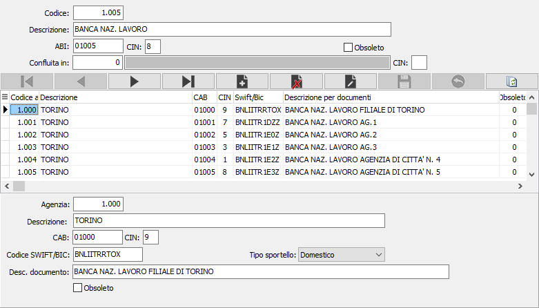

Banche
È possibile, su richiesta, ottenere il caricamento della tabella completa di tutte le banche all’atto dell’installazione di OS1. Tuttavia può rendersi necessario l’inserimento di ulteriori nuove agenzie, ed il programma di manutenzione della tabella banche provvede alla bisogna. I codici banca/agenzia vengono memorizzati nelle anagrafiche clienti o fornitori o inseriti interattivamente nei programmi che lo richiedono.
La tabella è articolata su due sezioni video: la sezione superiore, riservata alla Banche, consente di assegnare un codice all’Istituto di Credito; la sezione inferiore consente di trattare i dati relativi alle agenzie dell’istituto di credito in esame. È quindi necessario individuare in primo luogo la Banca su cui si vuole agire, per poi inserire, modificare o cancellare le agenzie da essa dipendenti.

Sezione video banca
CODICE BANCA: codice numerico che identifica la banca in esame. Per gli Istituti di credito Italiani si consiglia di utilizzare il codice ABI. Per quelli esteri, invece una codifica inferiore a 1.000. Sul campo sono attive le funzioni di ricerca
DESCRIZIONE: campo alfanumerico di 50 caratteri per indicare la ragione sociale dell’Istituto bancario.
CODICE ABI: campo alfanumerico di 5 caratteri per indicare il codice ABI generale dell'istituto di credito per il riconoscimento univoco a livello nazionale.
CIN: codice di controllo assegnato dalla banca.
CONFLUITA IN: campo dove indicare l'eventuale codice della banca in cui la banca corrente è confluita a causa di fusioni. Il dato è puramente informativo.
CIN: codice di controllo assegnato dalla banca e relativo al campo precedente.
OBSOLETO: flag attivabile dall’utente per inibire il possibile utilizzo dell’elemento di tabella in esame nelle successive transazioni.
Sezione video agenzia
AGENZIA: campo numerico per indicare il codice dell'agenzia della banca. Per gli Istituti di credito Italiani si consiglia l'utilizzo del codice CAB. Sul campo è attiva la ricerca sulla tabella stessa.
DESCRIZIONE: campo alfanumerico di 50 caratteri per descrivere la denominazione dell'agenzia.
CODICE CAB: campo alfanumerico di 5 caratteri da utilizzare per le agenzie italiane ai fini di inserire il codice di avviamento bancario dello sportello esattore.
CIN: codice di controllo assegnato dalla banca.
CODICE SWIFT/BIC: contiene l'identificativo dell'agenzia secondo la codifica SWIFT/BIC.
TIPO SPORTELLO: definisce se l’agenzia è situata in Italia (Domestico) oppure all’estero (Internazionale).
DESCRIZIONE PER DOCUMENTI: campo alfanumerico di 50 caratteri per inserire la descrizione estesa che verrà stampata sui vari documenti. Deve contenere sia la descrizione della banca, sia quella dell'agenzia.
OBSOLETO: flag attivabile dall’utente per inibire il possibile utilizzo dell’elemento di tabella in esame nelle successive transazioni.